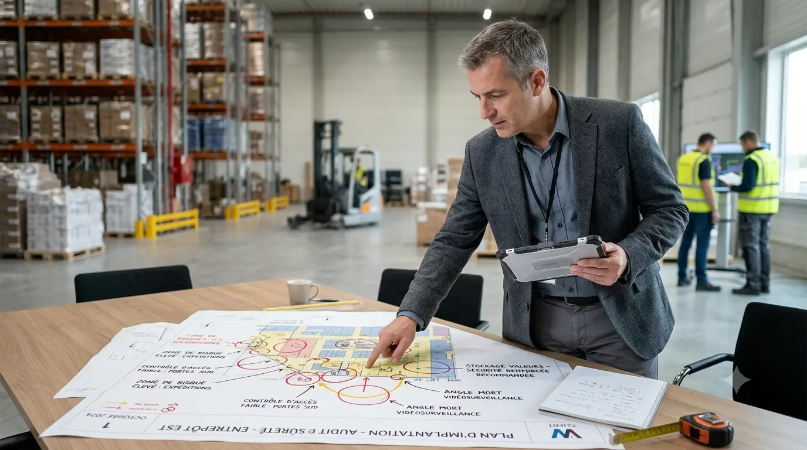
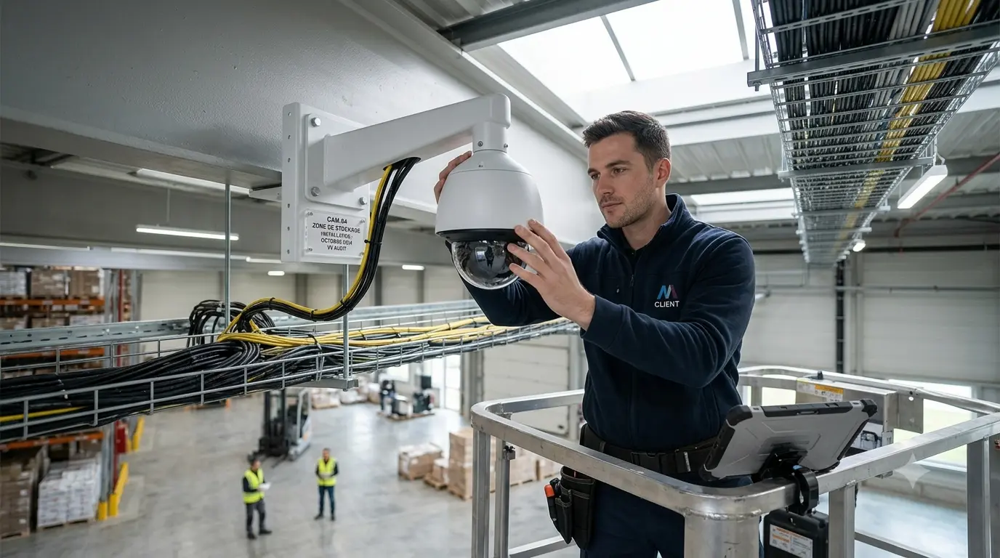
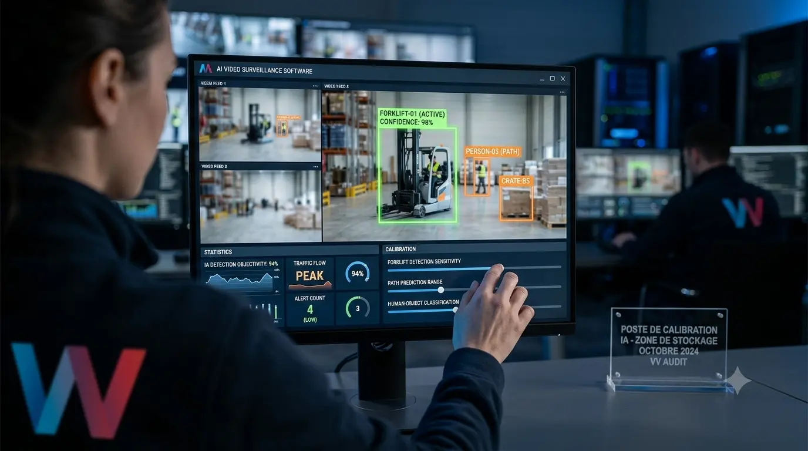
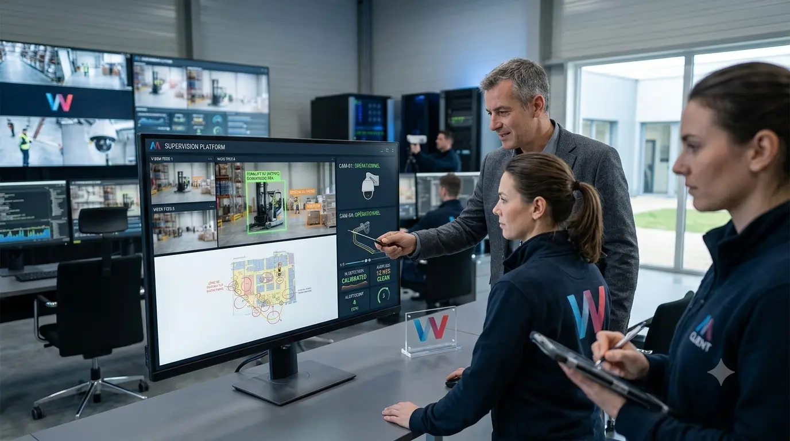

Vidéosurveillance IP
Caméras intérieures et extérieures, 4K, vision nocturne, anti-intempéries, dôme PTZ.

Vidéosurveillance professionnelle, analyse comportementale par IA, intégration avec le contrôle d'accès et l'alarme. Vos caméras peuvent faire bien plus qu'archiver des incidents — elles peuvent les éviter.
Caméras intérieures et extérieures, 4K, vision nocturne, anti-intempéries, dôme PTZ.
NVR redondés, calcul de durée de rétention selon vos exigences, sauvegarde déportée pour les sites sensibles.
Détection d'objets, lecture de plaques, reconnaissance comportementale, comptage et flux.
Poste de pilotage centralisé, gestion multi-sites, hyperviseur unique pour la sûreté physique.
Déclaration, durée de conservation, floutage, droits des personnes filmées.
Détection de non-port d'EPI (casque, gilet), surveillance des quais de chargement, comptage automatique des palettes, alerte sur les zones interdites. ROI sur la réduction des accidents et de la démarque.
Heatmaps des parcours clients, comptage entrée/sortie, mesure des temps d'attente en caisse, alerte sur les comportements suspects. ROI sur le merchandising et l'optimisation du personnel.
Lecture automatique de plaques pour le contrôle d'accès véhicule, détection d'intrusion périmétrique, alerte sur les mouvements en zone restreinte hors horaires.
Cartographie des risques opérationnels (vol, intrusion, accident, démarque) et des opportunités d'optimisation (flux clients, productivité). Cet audit pose les usages prioritaires avant de discuter d'équipement.

Choix des emplacements caméras, focales, résolutions. Dimensionnement du stockage en fonction de la rétention exigée. Architecture réseau dédiée à la vidéo (charge importante, à isoler).

Installation, configuration, puis — étape critique — calibration des modèles d'IA pour votre environnement réel. Une analyse vidéo non calibrée génère 90 % de faux positifs et finit par être ignorée.

Vos équipes de sûreté ou d'exploitation sont formées à utiliser les tableaux de bord, à interpréter les alertes et à définir leurs propres règles métier.

Pas nécessairement. Les solutions modernes d'analyse vidéo s'appliquent sur des flux de caméras IP existantes, à condition que la résolution et le positionnement soient corrects. Notre audit initial détermine ce qui peut être conservé et ce qui doit être renouvelé. Dans la moitié des cas, 60 à 80 % du parc existant est exploitable.
C'est l'enjeu majeur, et c'est ce qui distingue une intégration professionnelle d'un déploiement basique. La phase de calibration consiste à entraîner l'IA sur votre environnement réel pendant 2 à 4 semaines, en ajustant les seuils et les zones de détection. Nous engageons un objectif de moins de 5 % de faux positifs sur les cas d'usage prioritaires.
La déclaration CNDP est obligatoire pour toute vidéosurveillance. Elle conditionne la légalité du dispositif. Nous vous accompagnons sur le dossier de déclaration, le paramétrage technique conforme (durée de rétention, floutage en zones sensibles, gestion des droits) et l'affichage légal sur site.